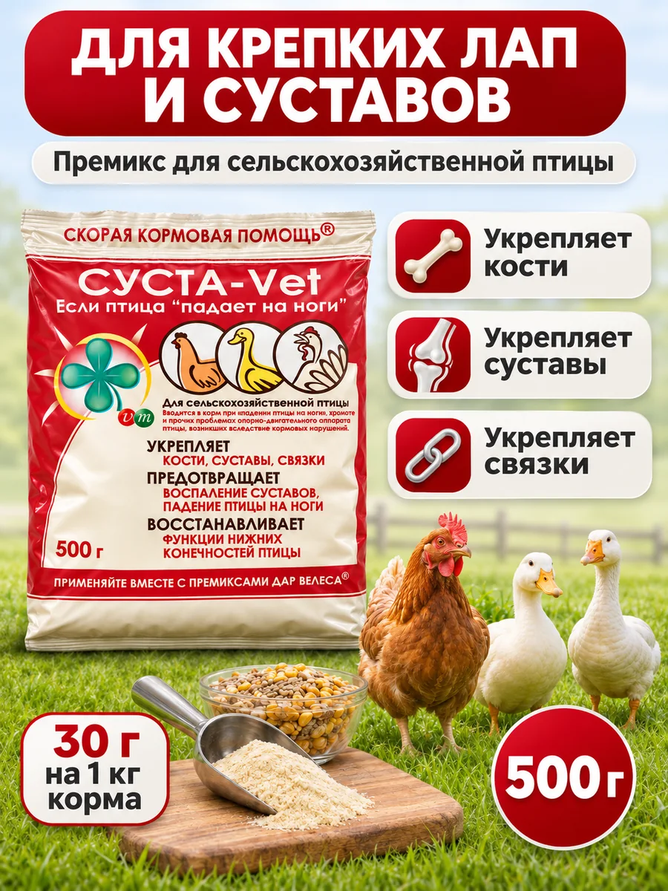

Чем кормить кур зимой, чтобы они продолжали нестись
Зимой на кладку влияет не только корм. Разбираем свет, температуру, подстилку и режим кормления — и что из этого проверяется первым.
Коротко
- Зимой первым проверяют не корм, а свет: при коротком дне кладка снижается независимо от рациона.
- Рекомендуемая температура в курятнике — плюс 12–16 °C, и в любом случае не ниже нуля.
- Глубокая подстилка до 30 см помогает удерживать тепло.
- Корм распределяют по дню неравномерно: примерно 40% утром и 60% во второй половине дня.
- Кальций нужен постоянно, а витамин D3 зимой особенно важен — своего солнца птице не хватает.
Свет — первое, что стоит проверить
Зимой короткий день сам по себе снижает яйценоскость. Поэтому досветка в курятнике — не «ускоритель», а возвращение птице нормального режима.
Источники называют разные цифры. Рекомендации по зимнему содержанию говорят о 15–18 часах света, бюллетень по линьке — о возвращении к 15–16 часам после её завершения. Безопасная формулировка, которой стоит держаться: не менее 14 часов, обычно 14–16.
Молодок на световой режим переводят постепенно: начинают примерно с 22 недель от 9 часов и добавляют по часу в неделю. Резко включать полный день не нужно.
Свет добавляют утром и вечером, а не ночью: птице нужен непрерывный тёмный период для отдыха.
Температура и подстилка
Рекомендуемый диапазон для курятника — плюс 12–16 °C. Ниже нуля опускаться нельзя: на морозе птица тратит корм на обогрев, а не на яйцо, и рискует обморозить гребень и серёжки.
Хорошо работает глубокая подстилка — слоем до 30 см. Она подпревает снизу, даёт немного тепла и держит пол сухим. Сырость в курятнике зимой опаснее холода.
Отдельно следите за вентиляцией: герметично закрытый курятник быстро становится сырым.
Режим кормления
Зимой имеет смысл распределять корм по дню неравномерно. Рекомендация из бюллетеня — около 40% суточной нормы утром и 60% во второй половине дня.
Логика простая: вечерняя порция дольше остаётся в зобе и поддерживает птицу ночью, когда формируется скорлупа и когда холоднее всего.
Кальций и витамины
Кальций нужен несушке каждый день: на скорлупу он расходуется постоянно. Минеральный корм удобнее держать в отдельной кормушке — птица берёт по потребности.
Зимой отдельного внимания заслуживает витамин D3: без него кальций и фосфор усваиваются хуже, а солнечного света птице не хватает. Проверьте, заявлен ли он в составе вашего премикса или минеральной добавки.
Премиксы вводят строго по норме с упаковки — обычно это доля от массы корма. Как это посчитать, разобрано в статье о вводе премикса, там же есть калькулятор.
Мы не обещаем прироста яйценоскости в процентах. Продуктивность зависит от света, температуры, возраста птицы, породы и рациона одновременно, и выделить вклад одного фактора нельзя.
Когда обращаться к ветеринару
Обратитесь к ветеринарному специалисту, если зимой:
- кладка упала у всего стада разом и это не совпало с линькой;
- птица вялая, сидит нахохлившись, отказывается от корма;
- появились выделения из носа или глаз, хрипы;
- есть падёж.
Переохлаждение и сырость — частая причина проблем, но ставить диагноз по описанию нельзя.
Что проверить за один обход
- Сколько часов горит свет и ровно ли он включается каждый день.
- Термометр в курятнике — на уровне птицы, а не под потолком.
- Сухая ли подстилка и какой она толщины.
- Есть ли минеральный корм в отдельной кормушке.
- Не замёрзла ли вода. Без воды птица перестаёт есть.
Частые вопросы
Сколько часов света нужно зимой?
Держитесь ориентира 14–16 часов. Источники дают диапазон от 15 до 18 часов, поэтому мы называем нижнюю надёжную границу, а не максимальную цифру.
Можно ли оставлять свет на ночь?
Не нужно. Птице необходим непрерывный тёмный период. Свет добавляют утром и вечером, удлиняя день с краёв.
Нужно ли отапливать курятник?
Ориентир — плюс 12–16 °C и не ниже нуля. Если без обогрева температура держится в этих пределах, отопление не требуется. Важнее сухость и отсутствие сквозняков.
Надо ли давать больше корма в мороз?
В холоде часть корма уходит на обогрев, поэтому потребление обычно растёт. Следите за кормушкой и состоянием птицы, а норму премикса при этом не меняйте: она считается от массы корма.
Что взять
 Скелетин для птиц, 1 кг
Кормовые добавки
Подробнее
Скелетин для птиц, 1 кг
Кормовые добавки
Подробнее

Суста-Vet «Скорая кормовая помощь», премикс для птицы, 500 г Кормовые добавки ПодробнееЦены на сайте демонстрационные. Купить можно на Ozon — кнопка на странице товара.
Источники
- Министерство сельского хозяйства и продовольствия Республики Татарстан, зимнее содержание птицы
- Hy-Line, технический бюллетень о скелете и скорлупе